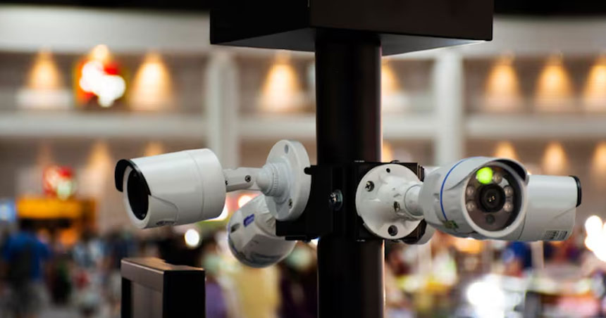
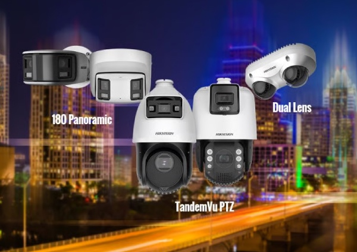
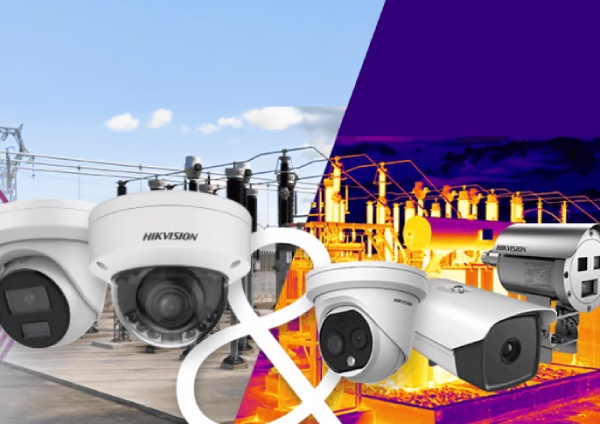
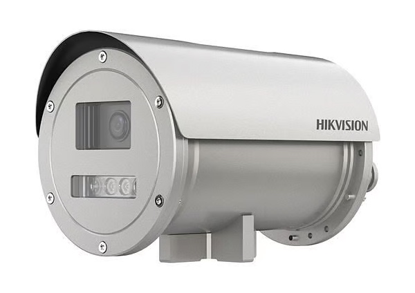
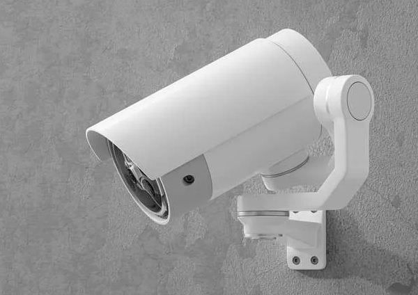

حلول متكاملة للكاميرات الأمنية وأنظمة المراقبة
نُعدّ من الشركات الرائدة في مجال أنظمة المراقبة التلفزيونية (CCTV) في المملكة العربية السعودية، حيث نوفر المعدات وخدمات التركيب اللازمة لتطبيق التدابير الأمنية التي تلبي احتياجاتكم.

نشر بث كاميرات احترافية عالية الدقة
نحن في شركة مجال الشبكات الأمنية و تقنية المعلومات نفخر بمكانتنا المرموقة في السوق المحلية، حيث نُعرف كمزود موثوق للمعدات الأمنية عالية الجودة التي تغطي طيفاً واسعاً من الاحتياجات الأمنية الأساسية.
نقدم تشكيلة واسعة ومتنوعة من الكاميرات والمعدات المرتبطة بها، مع توفير خيارات تتسم بالكفاءة والفعالية من حيث التكلفة لتلبية متطلباتكم. كما تشمل خدماتنا التعامل مع مختلف أنواع كاميرات المراقبة (CCTV) ومعدات المراقبة، إلى جانب تقديم خدمات احترافية للتركيب والصيانة.
تقنيات تصوير متطورة وبث مباشر عن بُعد
نضمن توافق تركيب كاميرات المراقبة الخاصة بكم مع معايير الدفاع المدني السعودي والهيئات الأمنية، مما يوفر حماية مستمرة.
-
كاميرات مراقبة Dome وBullet وPTZ بدقة HD/4K
-
توريد احترافي وخدمات تركيب معتمدة
-
حلول المراقبة المباشرة عن بُعد والتخزين السحابي
-
صيانة سنوية ودعم فني متخصص على مدار الساعة طوال أيام الأسبوع

حلول كاميرات المراقبة عبر الشبكة
حلول كاميرات المراقبة عبر الشبكة (IP CCTV) في بيئة العمل سريعة الوتيرة اليوم، أصبح ضمان أمن المكاتب أولوية قصوى للشركات؛ وتُعد كاميرات المراقبة التي تعمل عبر الشبكة (IP CCTV) أداةً جوهرية لحماية هذه البيئات، إذ تتيح المراقبة الفورية وتوفر جودة فيديو عالية الدقة.

الكاميرا الحرارية
أحدثت كاميرات المراقبة الحرارية الشبكية المدعومة بالذكاء الاصطناعي ثورة في مجال الأمن من خلال دمج تقنية التصوير الحراري المتقدمة مع التحليلات الذكية. وتُعد هذه الكاميرات عنصراً أساسياً للمراقبة الفعالة، لا سيما في ظروف الإضاءة المنخفضة أو الظروف البيئية الصعبة، نظراً لقدرتها على رصد البصمات الحرارية للأجسام والأشخاص.

حلول مقاومة للانفجار
صُممت كاميرات المراقبة التلفزيونية (CCTV) المقاومة للانفجار بأغلفة متينة للغاية ومعتمدة وفق معايير ATEX/IECEx، وهي مخصصة للبيئات الصناعية عالية المخاطر - مثل مصافي النفط والغاز ومناطق المواد الكيميائية الخطرة - لضمان السلامة المستمرة دون أي خطر لحدوث اشتعال كهربائي.

حلول كاميرات المراقبة التناظرية
توفر أنظمة كاميرات المراقبة التناظرية عالية الدقة حلاً موثوقًا للغاية وفعالًا من حيث التكلفة للمراقبة، وذلك باستخدام الكابلات المحورية الموجودة. توفر هذه الأنظمة بث فيديو عالي الدقة يصل إلى 4K مع مراقبة مباشرة بدون تأخير، مما يجعلها مثالية لتحديثات المواقع البسيطة.
تتيح إعدادات كاميرات IP الحرارية والقائمة على الذكاء الاصطناعي لدينا التنبيهات التلقائية للحركة، واكتشاف عبور الخط، وفهرسة الوجوه، مما يزيد من سلامة موقعك إلى أقصى حد.
من خلال دمج أنظمة كاميرات IP عالية الدقة بسلاسة مع بنى تحتية قوية لشبكات تكنولوجيا المعلومات المؤسسية، تضمن ماجال بقاء حركة بيانات المراقبة آمنة وموثوقة وخالية من التأخير. نقوم بتصميم وتنفيذ أنظمة كابلات هيكلية مُحسّنة باستخدام كابلات نحاسية عالية السرعة (Cat6/Cat6A) وألياف ضوئية، بالإضافة إلى محولات PoE مُدارة. لحماية بيانات المراقبة الحساسة، يقوم فريقنا بتهيئة شبكات محلية افتراضية (VLANs) مخصصة، وتطبيق أولويات صارمة لجودة الخدمة (QoS) لضمان استمرارية تدفق الفيديو، ونشر سياسات جدار حماية متقدمة لحماية شبكة الأمان من الوصول غير المصرح به والتهديدات الإلكترونية.
علاوة على ذلك، يتيح نهج شركة مجال الموحد اتصالاً سلساً بحلول التخزين المركزية ومراكز البيانات، مع دعم أنظمة تسجيل الفيديو الشبكي (NVR) عالية السعة، وأنظمة التخزين المرتبط بالشبكة (NAS) أو مصفوفات شبكات التخزين (SAN). وتضمن هذه البنية الاحتفاظ طويل الأمد بمقاطع الفيديو فائقة الدقة، مع توفير أنظمة احتياطية لضمان استمرارية العمل ومنع فقدان البيانات. وقد صُممت حلولنا للمراقبة بالفيديو (CCTV) القائمة على شبكات تكنولوجيا المعلومات لتواكب متطلبات المستقبل، إذ توفر إمكانات الإدارة عن بُعد وقابلية التوسع السلسة؛ مما يتيح للمؤسسات إضافة المزيد من الكاميرات، وزيادة سعة النطاق الترددي، ودمج تقنيات تحليل متقدمة تعتمد على الذكاء الاصطناعي تماشياً مع تزايد احتياجات الأمن في منشآتها.